Productos utilizados para la limpieza, desinfección y mantenimiento de áreas institucionales.
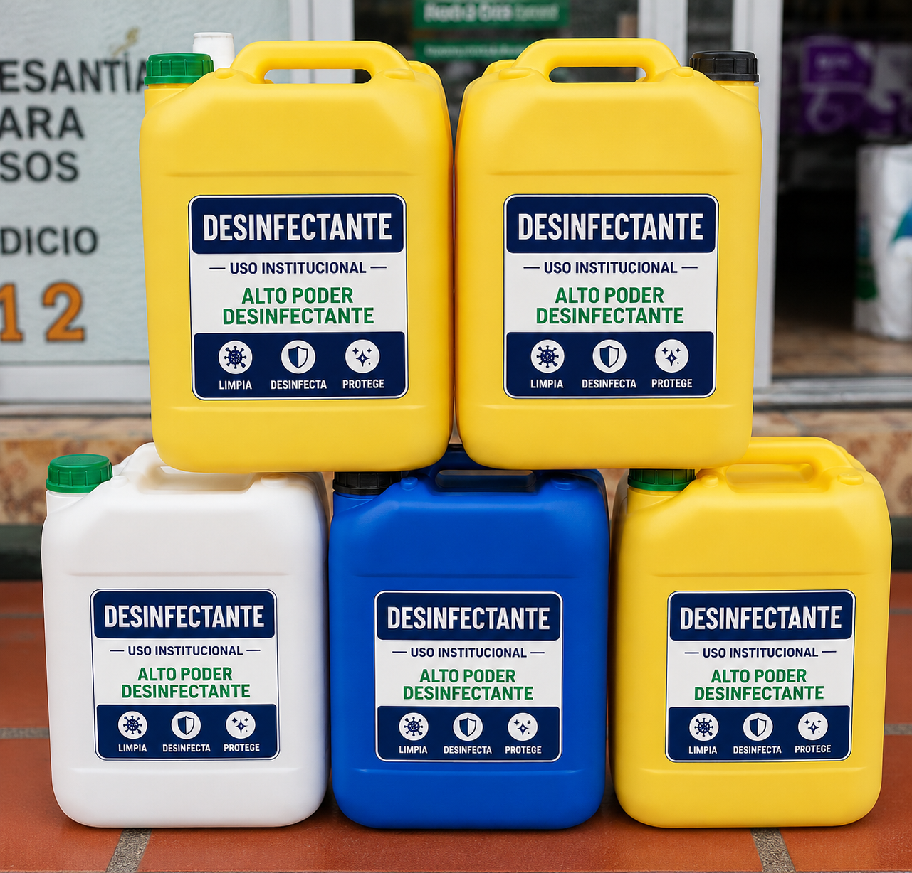
Producto utilizado para la desinfección de superficies y áreas comunes.
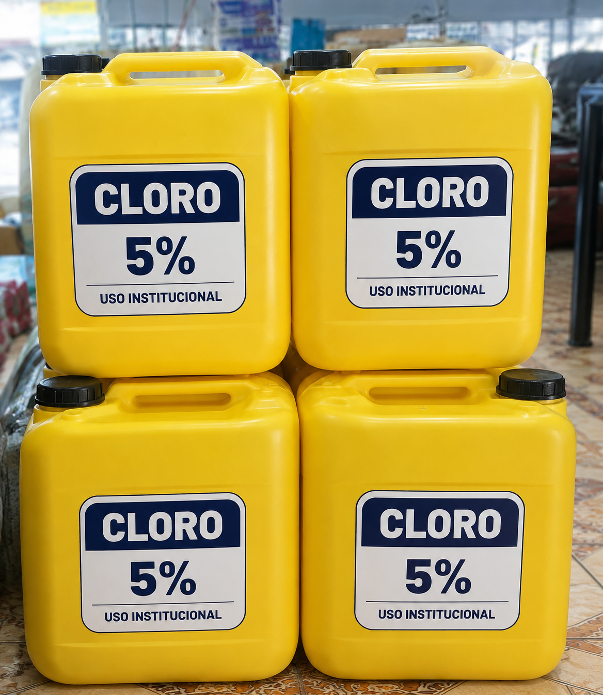
Insumo utilizado para limpieza profunda y desinfección controlada.
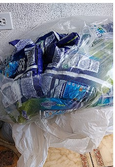
Producto para limpieza de pisos, baños, mobiliario y superficies.
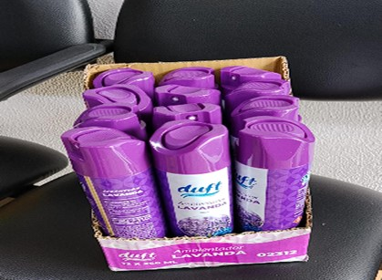
Producto usado para mantener espacios con aroma agradable.
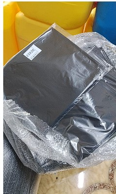
Insumo para recolección y manejo de residuos comunes.
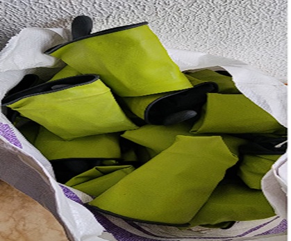
Equipo de protección utilizado por el personal operativo.
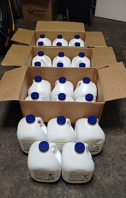
Producto químico desinfectante utilizado para la limpieza y sanitización de superficies, equipos y áreas de trabajo, contribuyendo al mantenimiento de condiciones adecuadas de higiene.
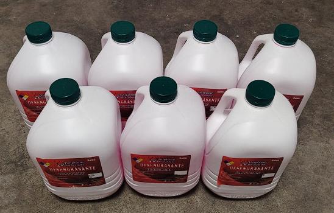
Producto de limpieza utilizado para eliminar grasa, aceite y suciedad difícil de superficies y equipos.
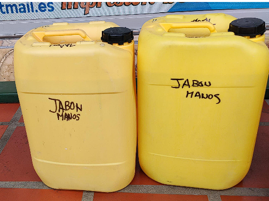
Producto de limpieza utilizado para remover suciedad y microorganismos de manos y superficies.
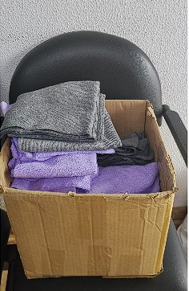
Implemento de limpieza utilizado para limpiar, secar y desinfectar diversas superficies.
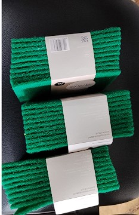
Implemento de limpieza utilizado para remover suciedad, grasa y residuos adheridos en superficies resistentes mediante acción de fregado.
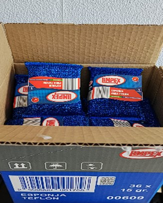
Implemento de limpieza utilizado para remover suciedad, grasa y residuos adheridos en utensilios y superficies mediante acción de fregado.
Herramienta manual utilizada para raspar, remover residuos adheridos, aplicar materiales o realizar labores de limpieza en diversas superficies.
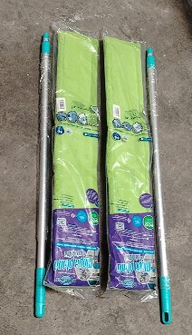
Implemento de limpieza utilizado para barrer, limpiar y secar pisos, removiendo polvo, suciedad y líquidos de manera eficiente.
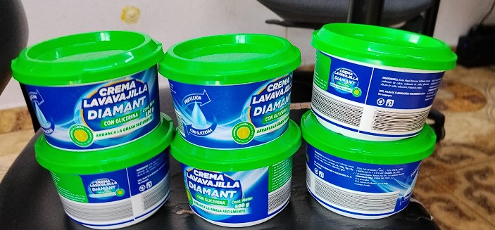
Producto de limpieza utilizado para remover grasa, restos de alimentos y suciedad de vajillas, utensilios y superficies lavables.